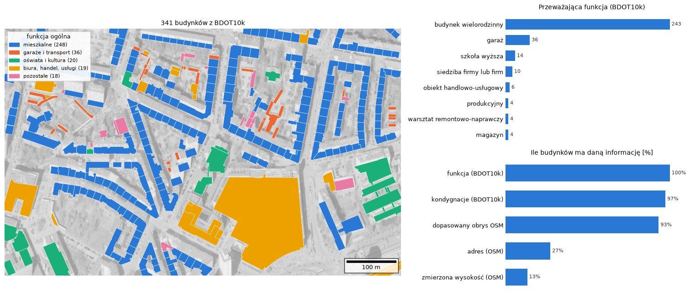
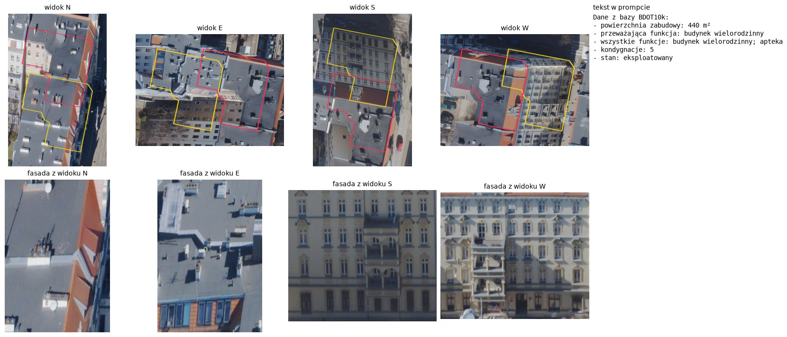
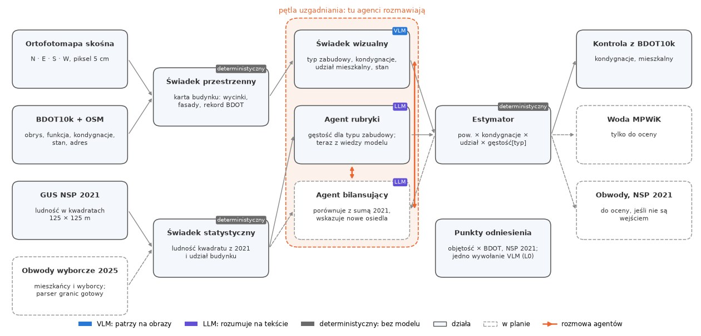
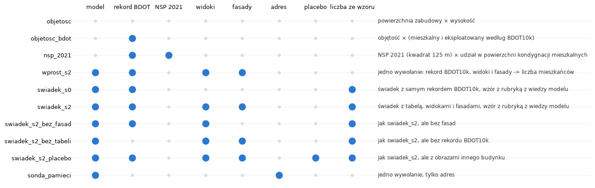
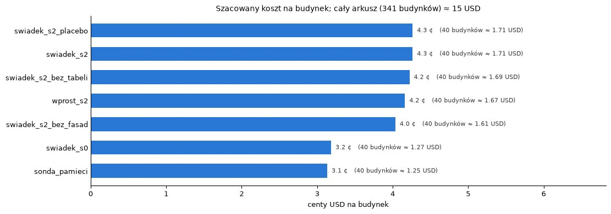
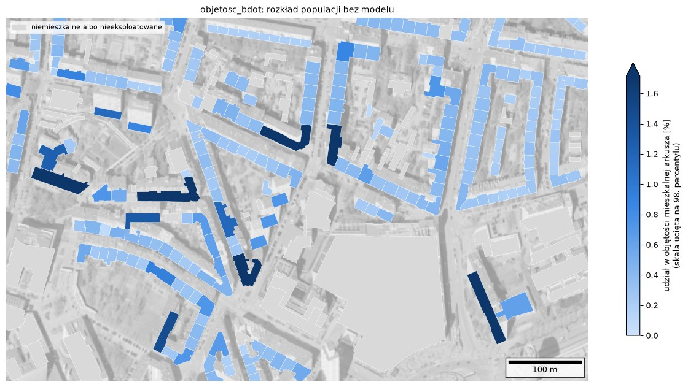

Agentowy system LLM, który rozdziela populację Wrocławia na pojedyncze budynki i zasila nią modele ruchu.
Dokładny rozkład źródeł podróży: z okręgu schodzimy do konkretnego budynku.
Narzędzie demonstracyjne, które pokazuje realne zaludnienie, bez arbitralnego strojenia pod niepewne dane twarde.
Rozkład ma być stabilny, tani i oceniony ilościowo. Dlatego traktujemy go jako eksperyment, a nie gotowy produkt.
Ortofotomapy pionowe i ukośne poprawiają rozkład w porównaniu z danymi nieobrazowymi, zwłaszcza dla zabudowy jednorodzinnej, budynków mieszanych i akademików.
Reguły na poziomie rejonu i agentowa iteracja bilansująca poprawiają stabilność i jakość w porównaniu z pojedynczym wywołaniem modelu.
Każdy poziom dokłada dokładnie jeden element, więc różnice wyników można przypisać przyczynowo.

Okolice pl. Grunwaldzkiego, 800 × 500 m. BDOT10k daje obrys, funkcję i kondygnacje, OSM dokłada adres i wysokość.

Kamienica przy Piastowskiej 36. Obrazy z ortofotomapy ukośnej plus rekord BDOT10k jako tekst. To jest warunek S2, a dzięki obrazom H1 da się sprawdzić na realnych danych.

Model nie zgaduje liczby mieszkańców: opisuje budynek (VLM), a liczbę liczy estymator ze wzoru. Agenci rozmawiają tylko w pętli uzgadniania z sumami NSP 2021. Woda MPWiK służy wyłącznie do oceny.

Dziesięć konfiguracji na tej samej próbce: baseline’y, S0 vs S2, bez fasad, bez tabeli BDOT, obraz placebo i sonda pamięci. Placebo odróżni „model patrzy na budynek” od „model dostał jakikolwiek obraz”.

3–4 ¢ na budynek, 40 budynków ≈ 1,3–1,7 USD na konfigurację. To szacunek z liczby tokenów (Claude Opus 5.5), bez wołania modelu. Ablacje na pilotażowej próbce są tanie i powtarzalne.

Objętość budynków uznanych przez BDOT10k za mieszkalne i eksploatowane. Udział budynku to jego część sumy arkusza przy stałej gęstości. Do tej mapy porównujemy każdy wariant z modelem.
Korelacja Spearmana z danymi MPWiK. F1 klasyfikacji budynku (mieszkalny / mieszany / niemieszkalny) na 150 obiektach. Pilotaż na 40 budynkach.
Wariancja kolejnych powtórzeń tej samej konfiguracji.
Koszt API w dolarach, liczba tokenów, czas odpowiedzi, liczba kroków i wywołań.
Woda z MPWiK na poziomie klatki schodowej (dane niepubliczne) jest tylko do oceny, więc system nie może się do niej dostroić. Sumy NSP 2021 są wejściem pętli bilansującej, a nie miarą jakości.
Dotychczas nie znaleźliśmy pracy z VLM na ortofotomapie ukośnej dla kondygnacji, wysokości i funkcji. Weryfikujemy to dalej.
Dane MPWiK są niepubliczne, więc dostęp trzeba potwierdzić. Pilotaż na 40 budynkach ma małą moc statystyczną. Koszty to na razie szacunek na sucho.
Dokończenie przeglądu literatury. Pierwszy prawdziwy przebieg na 40 budynkach i porównanie z baseline’em. Dane referencyjne (MPWiK, obwody wyborcze). Rubryka skalibrowana na sumach z 2021, potem osiedla oddane po 2021.